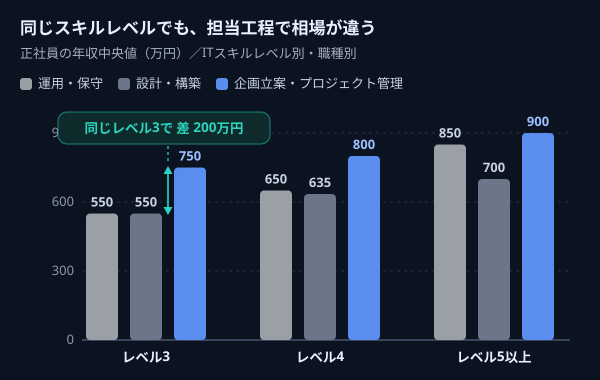
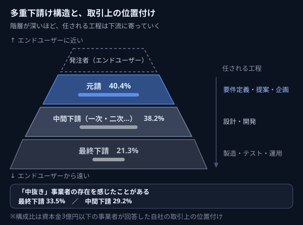
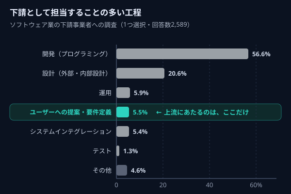
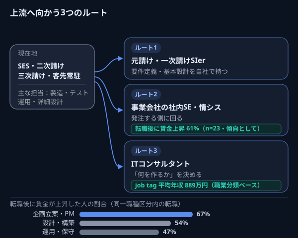

その経験、上流でどう読まれる？

本ページはプロモーションを含みます／相談は無料
SES、客先常駐、二次請け・三次請け。現場では中心的に動いているのに、年収も、任される工程も、なぜか何年も同じところで止まっている ── そう感じていませんか。
厚生労働省の委託調査には、こんなデータがあります。同じITスキルレベルでも、「設計・構築」を担当する人と「企画立案・プロジェクト管理」を担当する人では、年収の中央値に200万円前後の開きがある。
スキルの高さではなく、担当する工程で相場が違う。だとすれば、次に変えるべきなのは、努力の量ではないのかもしれません。
上流に行けるかどうか、無料で相談する→相談無料／入力4項目・約30秒／在職中OK
※厚生労働省「IT・デジタル人材の労働市場に関する研究調査事業」調査報告書（令和6年3月）。正社員の年収中央値、ITスキルレベル3の場合。
本ページはプロモーションを含みます／相談は無料
このページで分かること
技術力が足りないから、ではないかもしれません。次のような引っかかりを、抱えたまま働いていませんか。
昇給は毎年あるが、年5,000〜10,000円程度で止まっている
現場は何度も変わったのに、任される工程はいつも同じ層のまま
自分がいくらの単価で契約されているのか、知らされたことがない
詳細設計より上の工程には、ほとんど関わったことがない
常駐先の社員と同じ仕事をしているのに、扱いと年収だけが違う
評価する人が、自分の実際の仕事を見ていない
転職サイトを開いても「必須：要件定義経験」で毎回止まる
ひとつでも当てはまるなら、それはあなたの努力不足ではなく、仕事の割り当てられ方そのものに理由がある可能性があります。
次から、そのデータを見ていきます。
厚生労働省の委託調査「IT・デジタル人材の労働市場に関する研究調査事業」（令和6年3月）では、IT・デジタル人材の年収を、ITスキルレベル別・職種別に集計しています。
この調査で注目したいのは、同じスキルレベル同士を比べても、職種によって年収水準が違う、という点です。

正社員の年収中央値は、次のように報告されています。
ITスキルレベル3の場合
ITスキルレベル4の場合
同じレベル3でも、企画立案・プロジェクト管理の中央値は、設計・構築より200万円高い。報告書自身も「職種別に見ると、同じITスキルレベルでも、企画立案・プロジェクト管理の賃金水準が最も高い」と記しています。
つまり ──
スキルを上げれば年収は上がる。
ただしそれ以上に、「どの工程を担当しているか」で相場そのものが変わる。
あなたが今、詳細設計から下の工程を中心に担当しているなら、どれだけコードの品質を上げても、届く相場には上限があるかもしれません。これは能力の話ではなく、相場の話です。
※出典：厚生労働省「IT・デジタル人材の労働市場に関する研究調査事業」調査報告書（令和6年3月）／個人アンケート2023年9月実施、正社員のみ集計。金額は年収の中央値。
ここからは、日本のIT業界の構造そのものの話です。
公正取引委員会が2022年6月に公表した「ソフトウェア業の下請取引等に関する実態調査報告書」は、ソフトウェア業の多重下請構造を、大規模なアンケートで調べたものです。（資本金3億円以下の事業者 約21,000社を対象に実施）

この調査で、自社の取引上の位置づけを尋ねた結果は次のとおりです。
つまり、およそ6割の事業者が、誰かの下請けとして仕事を受けています。
さらに報告書には、こんな実態も記されています。
── 公正取引委員会 実態調査報告書に寄せられた事業者の声より
階層が増えれば、その分だけ中間コストが積み上がります。そして階層が深いほど、エンドユーザーとの距離も遠くなる。
これは、誰か一人が悪いという話ではありません。必要な人員をピーク時だけ確保したい、という発注側の事情から長い時間をかけて出来上がった構造です。報告書も、中間事業者の介在が一概に問題となるものではない、と述べています。
ただ、その構造の中で、どの工程が誰に割り当てられるかは、入る前からおおよそ決まってしまう。
※出典：公正取引委員会「ソフトウェア業の下請取引等に関する実態調査報告書」（令和4年6月公表）。取引上の位置付けは資本金3億円以下の法人向けアンケート（回答数4,589）。
同じ調査で、下請事業者が「担当することの多い工程」も聞かれています。結果はこうでした。

下請けとして受注する仕事のうち、要件定義や提案にあたる工程は、わずか5.5％。
ここに、多くのエンジニアが詰まっている「輪」があります。
これは、努力量では抜けにくい輪です。なぜなら、輪を作っているのが本人ではなく、仕事の流れ方だからです。
逆に言えば、この輪を抜ける方法はひとつしかありません。「経験を積んでから移る」のではなく、「経験の見せ方を変えて、先に移る」ことです。
その具体的なやり方は、このあと説明します。
※出典：公正取引委員会「ソフトウェア業の下請取引等に関する実態調査報告書」（令和4年6月公表）。法人向けアンケート「下請として担当することの多い工程」（1つ選択・回答数2,589）。
実務経験2年以上のITエンジニア対象／相談無料
前出の厚生労働省の委託調査には、転職後に賃金が上がった人の割合を年齢別に集計したデータがあります。
直近5年以内にIT・デジタル職種へ転職した人のうち、転職後に賃金が「増加した」と答えた割合は、次のとおりです。
ここで、二つのことを同時に言っておきます。
ひとつ。年齢が上がるほど、賃金が上がる転職の割合は下がっていく。30代前半と40代前半では、20ポイント以上の差があります。
もうひとつ。それでも40〜54歳で6割前後が賃金上昇しており、報告書自身は「年齢は転職前後での賃金上昇に大きな制約にはならない」と結論づけています。
つまり、40代でも遅くはない。ただし、20代後半〜30代前半のほうが、選べる選択肢は明らかに多い。
そして、上流の経験がないまま年数だけが増えると、「経験年数のわりに担当工程が浅い」という見られ方をされやすくなります。
急いで転職する必要はありません。ただ、「自分の経験が今どう見えているか」を知るのは、早いほど有利です。
※出典：厚生労働省「IT・デジタル人材の労働市場に関する研究調査事業」調査報告書（令和6年3月）。直近5年以内にIT・デジタル職種へ転職した人が対象（全体n=342）。年齢層ごとのサンプル数は26〜57件と限られるため、傾向として参照ください。
上流に近づくルートは、大きく3つあります。どれが正解ということはなく、何を取り戻したいかで変わります。

ROUTE 01
要件定義や基本設計を自社で持つ元請けSIer、あるいは一次請けへ。今の技術スタックをそのまま活かしやすく、移行のギャップが最も小さいルートです。
「同じ仕事を、商流の上でやる」というイメージが近いです。
ROUTE 02
発注側に回るルート。自社のシステムをどうするかを決める側になるため、要件定義・ベンダーコントロールの経験が積みやすくなります。
前出の厚生労働省の調査では、情報通信業から非情報通信業（＝事業会社側）へ転職した人の61％が転職後に賃金が上昇した、と報告されています。これは調査で比較された転職パターンの中で最も高い割合でした。
情報通信業→非情報通信業の転職で61%が賃金上昇ROUTE 03
要件定義よりさらに手前、「何を作るか」を決める領域へ。厚生労働省の職業情報提供サイト job tag では、ITコンサルタントの平均年収は889万円と掲載されています。
近年、コンサルティングファーム側でもエンジニア出身者の採用が広がっているとされています。
job tag 平均年収 889万円| ルート | 主に取り戻せるもの | 移行のしやすさ | 相性がいい人 |
|---|---|---|---|
| 元請けSIer 一次請け | 上流工程の経験、単価の階層 | ◎ 技術がそのまま活きる | 技術を続けたい人 |
| 社内SE 事業会社 | 決める側の立場、働き方の安定 | ○ 業務知識の学習が必要 | 常駐から離れたい人 |
| ITコンサルタント | 年収レンジ、経営に近い視点 | △ 選考難度は高い | 論理的な整理が得意な人 |
なお、前出の厚生労働省の調査では、転職前後で同じ職種区分に移った人の賃金上昇者の割合が、職種区分によって違うことも示されています。
同一職種区分内の転職で賃金が上昇した人の割合
上流の職種にいるほど、転職でも賃金が上がりやすい傾向がうかがえます。「立ち位置を変える」ことは、一度きりの年収アップではなく、その後の転職の効き方まで変える可能性がある、ということです。
※job tag出典：厚生労働省 職業情報提供サイト job tag「ITコンサルタント」（令和7年賃金構造基本統計調査に基づく）。※賃金上昇者割合の出典：厚生労働省「IT・デジタル人材の労働市場に関する研究調査事業」調査報告書（令和6年3月）。企画立案・プロジェクト管理はn=43など各区分のサンプル数は限られるため、傾向として参照ください。
上流を目指すとき、多くの人がここで止まります。「要件定義をやったことがないから、応募できない」。
でも、職務経歴書に「要件定義」という単語がないことと、上流に必要な材料を持っていないことは、別の話です。
あなたが書いている職務経歴書
↓
同じ経験の、別の書き方
右側は、要件定義そのものではありません。ですが、「業務を理解する」「課題を切り出す」「関係者と合意する」という、上流工程で問われる動き方の一部です。
前出の厚生労働省の調査では、企業側へのヒアリングとして「履歴書に記載されたプロジェクトの規模やプロジェクト内での立ち位置などを面接時に掘り下げつつ、ITスキルのレベルを総合的に判断している」という声が紹介されています。
企業が見ているのは、工程名のラベルだけではありません。その案件の中で、あなたがどこに立っていたかです。
もちろん、これは万能ではありません。運用監視やテスト実行のみを長く担当してきた場合、上流にいきなり移るのは簡単ではないのも事実です。
だからこそ、「今の経験でどこまで届くのか」を先に知る意味があります。
ここまで読んで「じゃあ転職サイトを見てみよう」と思った方に、先回りしてお伝えしておきたいことがあります。
自力で進めた場合、多くの人が次の3か所で止まります。
PITFALL 01
実際には、必須要件の一部を満たさなくても選考に進むケースはあります。ただしそれは、応募書類の書き方と推薦の有無で変わります。
PITFALL 02
使用技術と担当工程は書けるのに、「そのプロジェクトで自分が何を決めていたか」が書けない。これは、常駐先では自分の裁量範囲が曖昧になりやすいためです。
PITFALL 03
現職の不満として答えると、印象が悪くなりやすい。構造の話として整理し、志望動機に接続する必要があります。
これらは、求人を眺めているだけでは解決しません。必要なのは「良い求人を見つけること」ではなく、「あなたの経験を、上流の企業が読める形に翻訳すること」です。
職務経歴書なしでOK／約30秒で申し込み完了
TechGOは、実務経験2年以上のITエンジニアを対象とした転職エージェントです。求人の紹介だけでなく、「経験の棚卸し」から支援してくれる点が特徴です。
REASON 01
上流転職でいちばん時間がかかるのは、求人探しではなく「自分の経験のどこが評価されるのか」を見つける工程です。IT業界に理解のあるアドバイザーが、そこから一緒に整理してくれます。
REASON 02
SESからの転職では、「なぜ離れたいのか」「何を任されていたのか」を自分の言葉で説明できるかが分かれ目になります。納得いくまで練習できる環境は、ここに直接効きます。
REASON 03
TechGOは、ITコンサル・ハイクラス転職に強いMyVisionと同じ運営会社です。「上流に行きたい」という方向性と、扱っている領域が重なります。
REASON 04
常駐先の稼働が読めない、平日に動きにくい ── という状況でも、土曜日に選考を進められる機会があります。
入力するのは、名前・生年月日・メールアドレス・電話番号の4項目だけです。職務経歴書はこの時点では不要です。
今の担当工程、これまでの案件、行きたい方向を整理します。「そもそも上流に行けるのか」という段階の相談で構いません。
経験を上流企業に読める形に整えたうえで選考へ。模擬面接は回数制限なしなので、納得いくまで練習できます。
今の会社を辞めるべきだ、という話をしたいわけではありません。SESにも上流の案件はありますし、いい会社もあります。
ただ、ひとつだけ確かなことがあります。同じスキルレベルでも、担当する工程によって年収の相場は変わる。そして、どの工程を担当するかは、商流のどこにいるかで、かなりの部分が先に決まってしまう。
これは、あなたが変えられないことではありません。立ち位置は、変えられます。
まずは、あなたの経験が上流の転職市場でどう読まれるのか、確認するところから始めてみませんか。
上流に行けるかどうか、無料で相談してみる→相談無料／入力4項目・約30秒／在職中OK
実務経験2年以上のITエンジニア対象
本ページはプロモーションを含みます